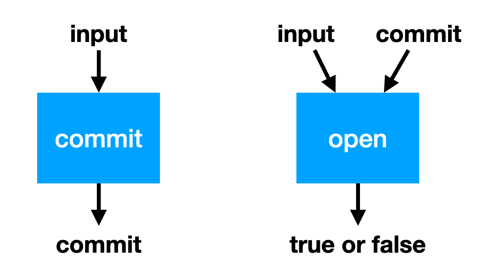

Overview
This page documents Mina‘s cryptographic backend.
Authors: Izaak Meckler, Vanishree Rao, Matthew Ryan, Joseph Spadavecchia, David Wong
In memory of Vitaly Zelov.
Polynomial commitment
Our polynomial commitment scheme is a bootleproof-type of commitment scheme, which is a mix of:
- The polynomial commitment scheme described in appendix A.1 of the PCD paper.
- The zero-knowledge opening described in section 3.1 of the HALO paper.
Committing to a polynomial
Commit
- given:
- the SRS G: a vector of
ndistinct curve points of unknown discrete logarithm - the SRS H: a distinc curve point of unknown discrete logarithm
- plnm: the coefficients of a polynomial of size at most
n - max: an optional upperbound we wish to enforce on the degree of the polynomial (e.g. max = 7 means the polynomial degree is 6 or less)
- the SRS G: a vector of
- do:
- res = commit_non_hiding(plnm, max)
- mask(res)
Commit_non_hiding:
- always produce a commitment
unshifted: Vec<point>- split the coefficients in chunks of size at most
n(e.g. if n is 5 and there are 11 coefficients then you should get 2 chunks of size 5 and 1 chunk of size 1) - for each chunk, do a multi scalar multiplication between the chunk’s coefficient and the points of the SRS’ G (e.g. for the coefficient vector (a, b) and the g vector
(G0, G1)the result would be[a]G_0 + [b]G_1) - the obtained vector of curve point is the
unshiftedresult
- split the coefficients in chunks of size at most
- optionally produce an upperbounded commitment
shifted: Option<point>ifmaxis set- take the last chunk of the coefficient
- if it is filled with zero, or if it of size 0 or or size n then return
None - otherwise, prepend the chunk of coefficients with enough zeros to make it of size
n, then perform a scalar multiplication to obtain theshiftedresult
Mask:
- given a non-hidden polynomial commitment, do:
- for all the curve point contained in the commitment (in the vector of
unshifted, and potentially inshifted) do:- if the curve point is zero, its associated randomness is zero (TODO: This leaks information when g is the identity! We should change this so that we still mask in this case)
- otherwise generate a random scalar value
w, then multiply it with the SRS’ H. Then modify the commitment to now store the curve point added to wH. Store w as associated randomness.
- for all the curve point contained in the commitment (in the vector of
Polynomial evaluation (also called “opening”)
Insight:
Algorithm:
- args:
- srs: an SRS
- group_map: a map TKTK
- plms: Vec<(DensePolynomial, Option
, PolyComm)> - elm: Vec
(some elements) - polyscale: F (v)
- evalscale: F (u)
- sponge
- do:
- if the size of the SRS’ vector G is not a power of 2, append it with enough points at infinity for its size to be a power of 2
- remember, we’re creating a proof of <a, b> = z where
- compute by going through each plms as
(p_i, degree_bound, omegas)and for each non-zerop_ido:- if degree_bound is set, abort if the degree of p_i is larger than the degree_bound given. Otherwise, abort if
omegas.shiftedis not set. - go through the coefficients by chunk of at most the length of the SRS’ G and do:
- p: multiply all the coefficients by powers of polyscale (v) and add them up
- blinding_factor: multiply all the omega.unshifted by powers of polyscale (v) and add them up
- edge-case: if degree_bound is set, and the chunk is past the degree_bound (TODO: which mean it should be the last chunk, but we don’t check it):
- pre-pend zero coefficients to the chunk so that the chunk can only use at most degree_bound Gs
- multiply it with the next power of v and add it to p
- if degree_bound is set, abort if the degree of p_i is larger than the degree_bound given. Otherwise, abort if
- compute
- Create the challenge:
- compute the inner product
- absorb the
shift_scalarof that ??? - squeeze out
t - use the group_map to transform
tinto the curve pointu
- make the vector the same size as the SRS by appending as many 0s as needed.
- perform as many rounds as possible to obtain a 1-length vector :
- split G in G_lo and G_hi
- split a in a_lo and a_hi
- split b in b_lo and b_hi
- generate two blinding factors rand_l and rand_r (field elements)
- compute
l = <a_hi, G_lo> + <rand_l, H> + <a_hi, b_lo>U - compute
r = <a_lo, G_hi> + <rand_r, H> + <a_lo, b_hi>U - absorb l and r
- squeeze out a challenge u, and compute its inverse (use the endo_r thing)
- compute
a = u_inv * a_hi + a_lo - compute
b = u * b_hi + b_lo - compute the halved basis for the next round:
g = g_lo + u g_hi
- g, a, and b should all be of length 1
Verifying a polynomial evaluation
do:
15-wires
Proof Creation
Idea: it’s fine if something crash here, not in verifier tho
Given:
witness: a witness, which is a list of columns (15) containing n group elementsgroup_map: a group map, an operation TKTKindex: an index, information related to the circuitprev_challenges: ???
- Create the public polynomial (via interpolation) as the polynomial that evaluates to the public values for x = domain[0..public.len()-1]. The public values are taken from the witness’ first column. Then negate the public polynomial (really?)
- Compute the witness polynomials. Interpolate each column of the witness into a polynomial that evaluates to the entry’s value when given points of the domain d1. The first column polynomial will also containt the public values (weird no?)
- Commit the wire values. For each witness polynomial, commit them via the following process: a. perform a multi scalar multiplication (MSM) with the coefficient of the polynomial and the SRS’s base (G_1, G2, ..., G_N) to produce a non-hidding commitment b. generate a random group element w c. add [w]H to the non-hidding commitment to produce a hiding commitment.
- Absorb transcript and produce , .
- Absorb a non-hiding commitment of the public input (absorb x coordinate, then y coordinate, as two field elements)
- Absorb each witness polynomial commitment in the same way
- Squeeze out two field elements: beta and gamma (the way squeeze is implemented involves sponge_5wires, look into that)
- Compute permutation aggregation polynomial.
- perm_aggreg() <- how does this work?
- compute the commitment of the permutation polynomial
z
- Absorb the z commitment into the argument and query
- absorb the z polynomial commitment
- produce the alpha challenge (a group element)
- use ScalarChallenge::to_field with the SRS’ endo_r to create alpha’
- compute powers of alpha’ (from alpha’^0 to alpha’^59)
- Evaluate polynomials over domains
- ???
- Compute quotient polynomial.
- Compute the quotient polynomial of all gates and the permutation polynomial individually. These will sometimes use other domains! Why? I guess it requires more than n evaluations? a. Permutation b. Generic c. Poseidon d. EC addition e. EC doubling f. endoscaling g. scalar multiplication
- collect contribution evaluations
- t4 = add + mul4 + pos4 + gen + doub4
- t8 = perm + mul + emul8 + pos8 + doub8
- divide contributions with vanishing polynomial
- f = t4.interpolate() + t8.interpolate() + genp + posp
- t = f/Zh
- t += bnd
- Commit the quotient polynomial
- perform an upperbounded polynomial commitment with upperbound = max_quot_size (which is hardcoded in the index/circuit)
- Absorb and produce zeta
- absorb commitment of t (unshifted)
- absorb a number of dummy group elements = (0, 0), exactly
max_t_size - t_comm.0.unshifted.len() of them. Why? This looks like padding. - if t_comm.shifted is zero, then absorb dummy again, otherwise absorb t_comm.shifted
- squeeze to obtain zeta challenge
- use ScalarChallenge::to_field with endo_r to obtain zeta’ (why? we don’t always scalar mul with zeta no?)
- Evaluate the committed polynomials (witness and quotient) at zeta
- compute zeta * omega (where omega is the generator of the domain d1)
- Compute and evaluate the linearization polynomial, (what’s that again?)
- Query opening scalar challenges
- squeeze v and create v’ with the endo technique
- squeeze u and create u’ with the endo technique
- Compute the opening proof (ok that’s where we aggregate all the openings and what’s to prove)
- prev_challenges { chals, comm } -> (???, comm.unshifted.len())
- non_hiding = commitment of zero?
Proof Verification
-
if the length of the proofs is 0, return true
-
create params from proofs, for each proof as (index, lgr_comm, proof) do:
- compute public input commitment as
- proof.public[1] * L_1(x) - proof.public[2] * L_2(x) - ... - create a sponge and create all the challenges from it:
- oracles.beta/gamma: absorb the public and the witness commitments, then squeeze out oracles.beta and oracles.gamma
- oracles.alpha: absorb the z commitment (permutation commitment) and squeeze alpha_chal. Derive oracles.alpha from it (using endo_r)
- oracles.zeta: absorb padded t commitment, and squeeze zeta_chal. Derive oracles.zeta from it (using endo_r)
- fq_sponge: the state of the Fq sponge BEFORE the last evaluation
- digest: the squeeze of the Fq sponge AFTER the last evaluation
- create an fr_sponge and absorb the digest
- alpha: pre-compute the powers of oracles.alpha starting from alpha^2
- retrieve all the domain index for public
- p_eval:
[ [ (zeta^n - 1) * [-pub[0]/(n(zeta-1)) - pub[1]/(n(zeta - w)) - pub[2]/(n(zeta - w^2)) - ...] // are these really the lagrange polynomials? (zeta^n-1)/(n(zeta-X)) ], [ // same, but with zeta * w ] ] - absorb the (p_eval[i], proof.evals[i]) and squeeze out v_chal and u_chal. Derive oracles.v and oracles.u from them (using endo_r)
- ...
- evlp: [zeta^n, (zeta*w)^n] where n is the max_poly_size
- polys:
- zeta1:
- combined_inner_product:
- evals = take the proof evaluations of segments of l, f, etc. (proofs.evals[i]) and combine them with powers of z^n or (zw)^n (evlp[i]) // this will help linearize the rest
- compute the lineraization polynomial commitments required to check the opening proofs:
- permutation
- generic
- poseidon
- EC addition
- EC doubling
- endoscalar multiplication
- scalar multiplication
- f
- check the linearization polynomial consistency (probably )
-
public(\z) = 0 or the evaluation of the public polynomial at \z if there’s a public input
-
missing_perm = (w6 + \gamma) \cdot z(\omega\z) \cdot \alpha^{PERM0} \cdot zkpm(\z) \cdot \sum_{i=0}^5 (\beta \cdot si) + witness[i] + \gamma // only involves the witness that are part of the permutation argument (7 of them)
-
missing_perm2 = \alpha^{PERM0} \cdot zkpm(\z) \cdot z(\z) \cdot \sum_{i=0}^6 (\gamma + \beta \cdot \z \cdot shift[i] + w[i]) // shift is for the cosets
-
left = [f(\z) + public(\z) - missing_perm + missing_perm2 - t(\z) \cdot (\z^n - 1)](\z - \omega^{n-3})(\z - 1)
-
right = [(\z^n - 1) \cdot \alpha^{PERM1} \cdot (\z - \omega^{n-3}) + (\z^n - 1) \cdot \alpha^{PERM2} \cdot (\z - 1)] (1 - z(\z))
-
ensure
-
- check the aggregated opening proof
[f(zeta) + pub(zeta) + permutation_stuff - t(zeta) * (zeta^n - 1)](zeta - w^{n-3})(zeta - 1)
compare that with PLONK-3-wires:

- compute public input commitment as
Poseidon hash
A hash function that is efficient for zk-SNARKs. It is based on the sponge function, with a state composed of field elements and a permutation based on field element operation (addition and exponentiation).
The perumtation is built like SPN block ciphers, with an S-box (exponentiation a group element), adding constants to the state, and matrix multiplication of the state (multiplications and additions) with an MDS matrix.
Since a field element is around 255-bit, a single field element is enough as the capacity of the sponge. The state is therefore often small, with our state being 4 field elements and a rate of 3 field elements.
- main website https://www.poseidon-hash.info/
- our ocaml implementation: https://github.com/minaprotocol/mina/blob/develop/src/lib/random_oracle/random_oracle.mli
- relies on random_oracle_input: https://github.com/minaprotocol/mina/blob/develop/src/lib/random_oracle_input/random_oracle_input.ml
- is instantiated with two types of fields:
- https://github.com/minaprotocol/mina/blob/develop/src/nonconsensus/snark_params/snark_params_nonconsensus.ml
- pickles:
- seems to rely on zexe code (https://www.youtube.com/watch?v=RItcNRChrzI&t=1732s)
we currently have a few choices:
- specify our own version
- adhere to the zcash poseidon spec
- specify an extension of the zcash poseidon spec
Pasta Curves
The two curves pallas and vesta (pa(llas ve)sta) created by the Zcash team. Each curve’s scalar field is the other curve’s base field, which is practical for recursion (see Pickles).
Overview
The proof system in Mina is a variant of PLONK. To understand PLONK, you can refer to our series of videos on the scheme. In this section we explain our variant, called 15-wires.
15-wires is not formally a zk-SNARK, as it is not succinct in the proof size. zk-SNARKs must a proof size where n is the number of gates in the circuit. (In practice, our proofs are in the order of dozens of kilobytes).
Note that 15-wires is a zk-SNARK in terms of verification complexity ()) and proving complexity: it is linear. The prover can’t be faster than linear, as they at least have to read the circuit.
Essentially what PLONK allows you to do is to, given a program with inputs and outputs, take a snapshot of its execution. Then, you can remove parts of the inputs, or outputs, or execution trace, and still prove to someone that the execution was performed correctly for the remaining inputs and outputs of the snapshot. There are a lot of steps involved in the transformation of “I know an input to this program such that when executed with these other inputs it gives this output” to “here’s a sequence of operations you can execute to convince yourself of that”.
Glossary
- size = number of rows
- columns = number of variables per rows
- cell = a pair (row, column)
- witness = the values assigned in all the cells
- gate = polynomials that act on the variables in a row
- selector vector = a vector of values 1 or 0 (not true for constant vector I think) that toggles gates and variables in a row
- gadget = a series of contiguous rows with some specific gates set (via selector vectors)
Commitments
What’s a commitment
A commitment is a cryptographic primitive that allows you to lock “something” (perhaps a number) without revealing it (yet). This will produce a commitment. Later, someone can ask you to reveal the “something”. After you do, then can verify that it is linked to the commitment by opening it.
Commitments are usually defined with these two properties:
- hiding: it does not reveal what is commited
- binding: you can’t open a commitment to a different value (think second pre-image)
A simple example
Take a hash function, for example SHA-256, and produce a random bytearray r of 16 bytes.
To commit to an input, perform the following (where || represents concatenation):
commit(input) = SHA-256(r || input)
To open the commitment, simply reveal input and r. The opening can be performed by simply re-hashing r || input and observing if it is equal to the commitment.
Why we use commitments
In most of our zero-knowledge proofs we’ll deal with commitments instead of values, because we want zero-knowledge. These commitments are given to us via the blockchain. (TODO: examples?)
Algebraic and homomorphic commitments
These commitments are also algebraic (not using a hash function like SHA-3) and as such have homomorphic properties: you can add commitments together to form another commitment of the added committed values. For example, if you have and , you can perform:
Pedersen commitments
For an input , and two bases and of unknown discrete logarithm in an additive group, a pedersen commitment is computed as with randomness . To open such a commitment, just reveal the value and .
Note that the commitment relies on the discrete logarithm assumption, so in theory you might be lucky (or have a quantum computer) and figure out that , which would allow you to find different values and to open the commitment. We say that pedersen commitments are computationally binding and not unconditionally binding.
On the other hand, Pedersen commitments are unconditionally hiding, as there is no way even with a magic computer to reveal what is without knowing . This is the reason why most of the proofs we will see later are not “proofs” per se, but arguments of knowledge (although we will care little about this distinction). In theory, you need perfect binding to be called a proof.
Multi-commitments
We can commit to several values by sending the pedersen commitments of all of these values as such:
But we can instead batch/aggregate all of these commitments together as:
with independent bases with unknown discrete logarithms. If you remove the term you get a non-hiding commitment, also called a Pedersen hash.
Note that if you see the s and the s as two vectors and , we can quickly write the previous statement as an inner product .
polynomial commitments
A polynomial commitment is a scheme that allows you to commit to a polynomial (i.e. to its coefficients). Later, someone can ask you to evaluate the polynomial at some point and give them the result, which you can do as well as provide a proof of correct evaluation.

Schwartz-Zipple lemma
TODO: move this section where most relevant
Let be a non-zero polynomial of degree over a field of size , then the probability that for a randomly chosen is at most .
Inner product argument
What is an inner product argument?
The inner product argument is the following construction: given the commitments (for now let’s say the hash) of two vectors and of size and with entries in some field , prove that their inner product is equal to .
There exist different variants of this inner product argument. In some versions, none of the values (, and ) are given, only commitments. In some other version, which is interesting to us and that I will explain here, only is unknown.
How is that useful?
Inner products arguments are useful for several things, but what we’re using them for in Mina is polynomial commitments. The rest of this post won’t make too much sense if you don’t know what a polynomial commitment is, but briefly: it allows you to commit to a polynomial and then later prove its evaluation at some point . Check my post on Kate polynomial commitments for more on polynomial commitment schemes.
How does that translate to the inner product argument though? First, let’s see our polynomial as a vector of coefficients:
Then notice that
And here’s our inner product again.
The idea behind Bootleproof-type of inner product argument
The inner product argument protocol I’m about to explain was invented by Bootle et al. It was later optimized in the Bulletproof paper (hence why we unofficially call the first paper bootleproof), and then some more in the Halo paper. It’s the later optimization that I’ll explain here.
A naive approach
So before I get into the weeds, what’s the high-level? Well first, what’s a naive way to prove that we know the pre-image of a hash , the vector , such that ? We could just reveal and let anyone verify that indeed, hashing it gives out , and that it also verifies the equation .
Obliviously, we have to reveal itself, which is not great. But we’ll deal with that later, trust me. What we want to tackle first here is the proof size, which is the size of the vector . Can we do better?
Reducing the problem to a smaller problem to prove
The inner product argument reduces the opening proof by using an intermediate reduction proof:
Where the size of is half the size of , and as such the final opening proof () is half the size of our naive approach.
The reduction proof is where most of the magic happens, and this reduction can be applied many times ( times to be exact) to get a final opening proof of size 1. Of course the entire proof is not just the final opening proof of size 1, but all the elements involved in the reduction proofs. It can still be much smaller than the original proof of size .
So most of the proof size comes from the multiple reduction subproofs that you’ll end up creating on the way. Our proof is really a collection of miniproofs or subproofs.
One last thing before we get started: Pedersen hashing and commitments
To understand the protocol, you need to understand commitments. I’ve used hashing so far, but hashing with a hash function like SHA-3 is not great as it has no convenient mathematical structure. We need algebraic commitments, which will allow us to prove things on the committed value without revealing the value committed. Usually what we want is some homomorphic property that will allow us to either add commitments together or/and multiply them together.
For now, let’s see a simple non-hiding commitment: a Pedersen hash. To commit to a single value simply compute:
where the discrete logarithm of is unknown. To open the commitment, simply reveal the value .
We can also perform multi-commitments with Pedersen hashing. For a vector of values , compute:
where each is distinct and has an unknown discrete logarithm as well. I’ll often shorten the last formula as the inner product for and . To reveal a commitment, simply reveal the values .
Pedersen hashing allow commitents that are non-hiding, but binding, as you can’t open them to a different value than the originally comitted one. And as you can see, adding the commitment of and gives us the commitment of :
which will be handy in our inner product argument protocol
The protocol
Set up
Here are the settings of our protocol. Known only to the prover, is the secret vector
The rest is known to both:
- , a basis for Pedersen hashing
- , the commitment of
- , the powers of some value such that
- the result of the inner product
For the sake of simplicity, let’s pretend that this is our problem, and we just want to halve the size of our secret vector before revealing it. As such, we will only perform a single round of reduction. But you can also think of this step as being already the reduction of another problem twice as large.
We can picture the protocol as follows:
- The prover first sends a commitment to the polynomial .
- The verifier sends a point , asking for the value . To help the prover perform a proof of correct evaluation, they also send a random challenge .
- The prover sends the result of the evaluation, , as well as a proof.
Prover->Verifier: com(f)
Verifier->Prover: s, random x
Prover->Verifier: z = f(s), proof of opening
Does that make sense? Of course what’s interesting to us is the proof, and how the prover uses that random .
Reduced problem
First, the prover cuts everything in half. Then they use to construct linear combinations of these cuts:
This is how the problem is reduced to .
At this point, the prover can send , , and and the verifier can check if indeed . But that wouldn’t make much sense would it? Here we also want:
- a proof that proving that statement is the same as proving the previous statement ()
- a way for the verifier to compute and and (the new commitment) by themselves.
The actual proof
The verifier can compute as they have everything they need to do so.
What about , the commitment of which uses the new basis. It should be the following value:
So to compute this new commitment, the verifier needs:
- the previous commitment , which they already have
- some powers of , which they can compute
- two curve points and , which the prover will have to provide to them
What about ? Recall:
So the new inner product should be:
Similarly to , the verifier can recompute from the previous value and two scalar values and which the prover needs to provide.
So in the end, the proof has becomes:
- the vector which is half the size of
- the curve points (around two field elements, if compressed)
- the scalar values
We can update our previous diagram:
Prover->Verifier: com(f)
Verifier->Prover: s, random x
Prover->Verifier: z = f(s)
Prover->Verifier: a', L_a, R_a, L_z, R_z
In our example, the naive proof was to reveal which was 4 field elements. We are now revealing instead 2 + 2 + 2 = 6 field elements. This is not great, but if was much larger (let’s say 128), the reduction in half would still be of 64 + 2 + 2 = 68 field elements. Not bad no? We can do better though...
The HALO optimization
The HALO optimization is similar to the bulletproof optimization, but it further reduces the size of our proof, so I’ll explain that directly.
With the HALO optimization, the prover translates the problem into the following:
This is simply a commitment of and .
A naive proof is to reveal and let the verifier check that it is a valid opening of the following commitment. Then, that commitment will be reduced recursively to commitments of the same form.
The whole point is that the reduction proofs will be smaller than our previous bootleproof-inspired protocol.
How does the reduction proof work? Notice that this is the new commitment:
This is simply from copy/pasting the equations from the previous section. This can be further reduced to:
And now you see that the verifier now only needs, in addition to , two curve points (~ 2 field elements):
this is in contrast to the 4 field elements per reduction needed without this optimization. Much better right?
At the end of a round (or the protocol) the verifier can compute the expected commitment as such:
and open it by computing the following and checking it is indeed equal to :
For this, the verifier needs to recompute and by themselves, which they can as they have all the necessary information. We can update our previous diagram:
Prover->Verifier: com(f) = A
Verifier->Prover: s, random x
Prover->Verifier: z = f(s)
Prover->Verifier: a', L, R
Note right of Verifier: reconstruct G', b', C'
Note right of Verifier: open C'
What about zero-knowledge?
Didn’t we forget something? Oh right, we’re sending in clear, a single element that will leak some information about the original vector (as it is a linear combination of that original vector).
The simple solution is to alter our pedersen commitment to make it hiding on top of being binding:
where H is another generator we don’t know the discrete logarithm of, and is a random scalar value generated by the prover to blind the commitment.
But wait, each and also leaks some! As they are also made from the original secret vector . Remember, No worries, we can perform the same treatment on that curve point and blind it like so:
In order to open the final commitment, the verifier first recomputes the expected commitment as before:
then use and the final blinding value sent by the prover (and composed of and all the rounds’ and ), as well as reconstructed and to open the commitment:
with being equal to something like
At this point, the protocol requires the sender to send:
- 2 curve points and per rounds
- 1 scalar value for the final opening
- 1 blinding (scalar) value for the final opening
But wait... one last thing. In this protocol the prover is revealing , and even if they were not, by revealing they might allow someone to recompute ... The HALO paper contains a generalized Schnorr protocol to open the commitment without revealing nor .

from Vanishree:
- So in general the more data we send the more randomness we need to ensure the private aspects are hidden, right
- The randomness in a commitment is because we are sending the commitment elements
- The random elements mixed with the polynomial (in the new zkpm technique) is because we send evaluations of the polynomial at zeta and zeta omega later
- Zk in Schnorr opening is because we reveal the opening values
where can I find a proof? perhaps appendix C of https://eprint.iacr.org/2017/1066.pdf
The real protocol, and a note on non-interactivity
Finally, we can look at what the real protocol end up looking at with rounds of reduction followed by a commitment opening.
Prover->Verifier: com(f)
Verifier->Prover: s
Prover->Verifier: z = f(s)
Verifier->Prover: random x
Prover->Verifier: L, R
Note right of Prover: many more rounds later...
Verifier->Prover: random x
Prover->Verifier: L, R
Note left of Prover: now let's open \nthe last commitment
Prover->Verifier: r', a'
Note right of Verifier: reconstruct G', b', C'
Note right of Verifier: open C'
So far the protocol was interactive, but you can make it non-interactive by simply using the Fiat-Shamir transformation. That’s all I’ll say about that.
Different functionnalities
There’s a number of useful stuff that we can do on top of a bootleproof-style polynomial commitment. I’ll briefly list them here.
Enforcing an upperbound on the polynomial degree
Imagine that you want to enforce a maximum degree on a committed polynomial. You can do that by asking the prover to shift the coefficients of the polynomial to the right, so much that it becomes impossible to fit them if the polynomial were to be more than the maximum degree we wanted to enforce. This is equivalent to the following:
When the verifier verifies the opening, they will have to right shift the received evaluation in the same way.
Aggregating opening proofs for several polynomials
Insight:
Aggregating opening proofs for several evaluations
Insight:
Double aggregation
Insight:
Note that this kind of aggregation forces us to provide all combinations of evaluations, some of which might not be needed (for example, ).
Splitting a polynomial
If a polynomial is too large to fit in one SRS, you can split it in chuncks of size at most
Proof of correct commitment to a polynomial
That is useful in HALO. Problem statement: given a commitment , and a polynomial , prove to me that the . The proof is simple:
- generate a random point
- evaluate at ,
- ask for an evaluation proof of on . If it evaluates to as well then is a commitment to with overwhelming probability
Maller optimization to reduce proof size
In the PLONK paper, they make use of an optimization from Mary Maller in order to reduce the proof size.
Explanation
Maller’s optimization is used in the “polynomial dance” between the prover and the verifier to reduce the number of openings the prover send.
Recall that the polynomial dance is the process where the verifier and the prover form polynomials together so that:
- the prover doesn’t leak anything important to the verifier
- the verifier doesn’t give the prover too much freedom
In the dance, the prover can additionally perform some steps that will keep the same properties but with reduced communication.
Let’s see the protocol where Prover wants to prove to Verifier that
given commitments of .
Note left of Prover: commits to h1, h2, h3
Prover->Verifier: com(h1), com(h2), com(h3)
Note right of Verifier: generates random point s
Verifier-->Prover: s
Note left of Prover: evaluates at point s
Prover->Verifier: h1(s), h2(s), h3(s)
Prover->Verifier: proofs of openings
Note right of Verifier: verifies that \n h1(s)h2(s) - h3(s) = 0
A shorter proof exists. Essentially, if the verifier already has the opening h1(s), they can reduce the problem to showing that
given commitments of and evaluation of at a point .
Note left of Prover: commits to h1, h2, h3
Prover->Verifier: com(h1), com(h2), com(h3)
Note right of Verifier: generates random point s
Verifier-->Prover: s
Note left of Prover: evaluates at point s
Prover->Verifier: h1(s), L(s)
Prover->Verifier: proofs of openings
Note right of Verifier: forms polynomial com(L) = \n h1(s)com(h2) - com(h3)
Note right of Verifier: checks that L(s) = 0
Notes
Why couldn’t the prover open the polynomial directly?
By doing
Note left of Prover: commits to h1, h2, h3
Prover->Verifier: com(h1), com(h2), com(h3)
Note right of Verifier: generates random point s
Verifier-->Prover: s
Note left of Prover: evaluates at point s
Prover->Verifier: L'(s), proof of opening
Note right of Verifier: forms polynomial com(L') = \n com(h1)com(h2) - com(h3)
Note right of Verifier: verifies that \n h1(s)h2(s) - h3(s) = 0
The problem here is that you can’t multiply the commitments together without using a pairing (if you’re using a pairing-based polynomial commitment scheme), and you can only use that pairing once in the protocol.
If you’re using an inner-product-based commitment, you can’t even multiply commitments.
question: where does the multiplication of commitment occurs in the pairing-based protocol of PLONK? And how come we can use bootleproof if we need that multiplication of commitment?
Appendix: Original explanation from the PLONK paper
https://eprint.iacr.org/2019/953.pdf

For completion, the lemma 4.7:

Lagrange basis in multiplicative subgroups
What’s a lagrange base?
if , otherwise.
What’s the formula?
Arkworks has the formula to construct a lagrange base:
Evaluate all Lagrange polynomials at to get the lagrange coefficients. Define the following as
- : The coset we are in, with generator and offset
- : The size of the coset
- : The vanishing polynomial for .
- : A sequence of values, where , and
We then compute as
However, if in , both the numerator and denominator equal 0 when i corresponds to the value tau equals, and the coefficient is 0 everywhere else. We handle this case separately, and we can easily detect by checking if the vanishing poly is 0.
following this, for we have:
- and so on
What’s the logic here?
https://en.wikipedia.org/wiki/Lagrange_polynomial#Barycentric_form
non-interaction with fiat-shamir
So far we’ve talked about an interactive protocol between a prover and a verifier. The zero-knowledge proof was also in the honest verifier zero-knowedlge (HVZK) model, which is problematic.
In practice, we want to remove the interaction and have the prover produce a proof by themselves, that anyone can verify.
Public-coin protocols
public-coin protocols are protocols were the messages of the verifier are simply random messages. This is important as our technique to transform an interactive protocol to a non-interactive protocol works on public-coin protocols.
Fiat-Shamir trick
The whole idea is to replace the verifier by a random oracle, which in practice is a hash function. Note that by doing this, we remove potential leaks that can happen when the verifier acts dishonestly.
Initially the Fiat-Shamir transformation was only applied to sigma protocols, named after the greek letter due to its shape resembling the direction of messages (prover sends a commit to a verifier, verifier sends a challenge to a prover, prover sends the final proof to a verifier). A would have made more sense but here we are.
Generalization of Fiat-Shamir
As our protocol has more than three moves, where every even move is a challenge from the verifier, we need to generalize Fiat-Shamir. This is simple: every verifier move can be replaced by a hash of the transcript (every message sent and received so far) to obtain a challenge.
In practice: a duplex construction as Merlin
While we use a hash function for that, a different construction called the duplex construction is particularly useful in such situations as they allow to continuously absorb the transcript and produce challenges, while automatically authenticating the fact that they produced a challenge.
Merlin is a standardization of such a construction using the Strobe protocol framework (a framework to make use of a duplex construction). Note that the more recent Xoodyak (part of NIST’s lightweight competition) could have been used for this as well. Note also that Mina uses none of these standards, instead it simply uses Poseidon (see section on poseidon).